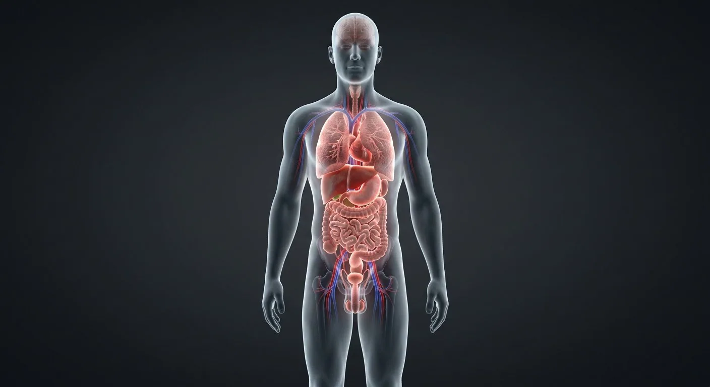
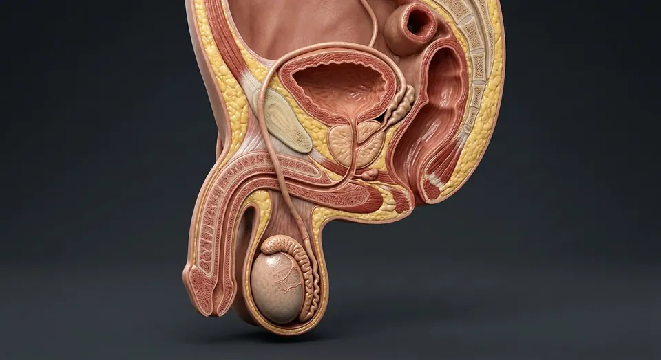

How this part of the body works
Use this page as an orientation map: click any glowing organ to jump into its full entry with the realistic render, labelled schematic and quiz.
Read the anatomy, part by part
These 10 structures correspond to the chapter’s regional illustration or schematic. Each entry separates location, function and a clinical point.
Brain
Control centre housed in the skull, glowing through the translucent scalp.
What it doesIntegrates sensation, movement, thought, memory and autonomic drive.
Clinical connectionStroke risk rises with age — remember FAST: face, arms, speech, time.
Thyroid gland
Butterfly-shaped gland on the front of the neck.
What it doesSets metabolic rate via T3/T4 under TSH control.
Clinical connectionHypothyroidism causes fatigue, weight gain and cold intolerance.
Lungs
Paired thoracic organs flanking the heart.
What it doesGas exchange across ~300 million alveoli.
Clinical connectionSmoking destroys alveolar walls → emphysema.
Heart
Muscular pump in the mediastinum, a little left of midline.
What it doesDrives about 5 L of blood per minute through two circuits.
Clinical connectionCoronary blockage causes myocardial infarction.
Liver
Largest internal organ, right upper quadrant.
What it doesMetabolism, detoxification, bile, plasma proteins.
Clinical connectionCirrhosis scars the parenchyma (alcohol, hepatitis).
Stomach
J-shaped reservoir under the diaphragm, left side.
What it doesAcid–pepsin digestion; intrinsic factor for B12.
Clinical connectionH. pylori is the commonest cause of peptic ulcer.
Intestines
Small and large intestine coiling through the abdomen.
What it doesAbsorbs nutrients, water, electrolytes; hosts the microbiome.
Clinical connectionObstruction and appendicitis present as acute pain.
Urinary bladder
Pelvic reservoir behind the pubic symphysis.
What it doesStores urine; stretch triggers the micturition reflex.
Clinical connectionFrequency + dysuria usually mean infection.
Penis
External organ of urination and copulation.
What it doesErectile tissue engorges; delivers semen.
Clinical connectionErectile dysfunction is an early vascular warning sign.
Testes
Paired gonads in the scrotum, outside the body cavity.
What it doesSpermatogenesis and testosterone production.
Clinical connectionUndescended testis raises malignancy risk.
Deeper structures and tissue layers
These 10 additional entries give anatomical context. They are deliberately not assigned a photographic pin on the regional image.
Related deep chapters: Cerebrum · cortex & deep pathways, Pulmonary acinus · gas-exchange barrier, Nephron · kidney microanatomy, Hepatic lobule · liver microanatomy, Skin layers & appendages.
Cortical gray matter
Neuronal cell-body sheet folded into gyri and sulci.
What it doesIntegrates sensory, motor and association information.
Clinical connectionRegional cortical lesions give different deficits.
Terminal bronchiole
Final nonalveolated conducting airway before respiratory zone.
What it doesDelivers air to downstream acinus.
Clinical connectionContains no cartilage plates or submucosal glands.
Afferent arteriole
Brings arterial blood into glomerular capillary tuft.
What it doesRegulates incoming glomerular pressure.
Clinical connectionDiameter influences filtration rate.
Portal venule
Small portal vein branch delivering nutrient-rich splanchnic blood to sinusoids.
What it doesFeeds liver parenchyma.
Clinical connectionPortal obstruction can raise portal pressure.
Stratum basale
Deep single proliferative keratinocyte layer adjoining basement membrane.
What it doesRenews overlying epidermis.
Clinical connectionBasal-cell carcinoma derives from basal-type cells.
Layer I · molecular
Superficial neuropil-rich layer below pia, with relatively few neuronal somata.
What it doesSupports horizontal intracortical connections.
Clinical connectionSix-layer plan is a template, not identical in every area.
Respiratory bronchiole
First airway segment with alveoli interrupting its wall.
What it doesCombines air conduction and some gas exchange.
Clinical connectionMarks proximal boundary of acinus.
Glomerular capillaries
Fenestrated capillary loops between afferent and efferent arterioles.
What it doesPass plasma water and small solutes toward Bowman space.
Clinical connectionDamage may permit albumin or red cells into urine.
Hepatic arteriole
Terminal hepatic artery branch carrying oxygenated blood.
What it doesAdds oxygen to sinusoidal flow and supplies biliary structures.
Clinical connectionNot the same as portal venous inflow.
Stratum spinosum
Several layers of keratinocytes strongly joined by desmosomes.
What it doesProvides mechanical cohesion.
Clinical connectionDesmosomal disruption causes epidermal blistering.
Five questions about Male body — anterior
Short answers grounded in the structures described above. Use the illustrated guide for anatomical context.
Where are the main organs in the male body?
The brain is in the skull; lungs and heart occupy the chest; liver, stomach, intestines and kidneys occupy the abdomen; and pelvic organs include bladder and reproductive structures.
Does a male body map show every deep structure?
No. The overview is an orientation map; its chapter links provide deeper tissue, vascular, skeletal and nerve details not separately visible on one full-body plate.
Where is the brain shown on the male body map?
Control centre housed in the skull, glowing through the translucent scalp. Function: Integrates sensation, movement, thought, memory and autonomic drive.
Where are the lungs in the male body map?
Paired thoracic organs flanking the heart. Function: Gas exchange across ~300 million alveoli.
What does the liver do in the male body?
Function: Metabolism, detoxification, bile, plasma proteins. Largest internal organ, right upper quadrant.
Related anatomy guides
Follow these connected structures and body systems in the illustrated atlas.

Male reproductive systemSperm production in the scrotum, maturation in the epididymis, and a shared exit with urine.↗ KidneyCoronal section plus a nephron: filtration, reabsorption, secretion and urine concentration.↗
KidneyCoronal section plus a nephron: filtration, reabsorption, secretion and urine concentration.↗ HeartA four-chambered muscular pump with four valves and its own electrical conduction system.↗
HeartA four-chambered muscular pump with four valves and its own electrical conduction system.↗Further reading
General anatomy references and related source chapters for continued study. These links do not make the digital illustrations clinical images or certify every anatomical variant.
This educational material does not provide medical advice, diagnosis or treatment. A named clinical reviewer has not been claimed for this page.
Open the interactive plate, pins, animated schematic and self-test.